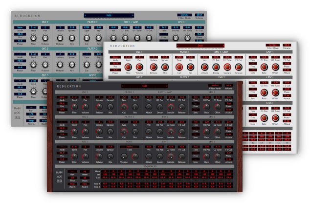

Navigation
next
previous
|
Dead Duck Software
»
Reducktion
Reducktion
¶

Contents
¶
Overview
Installation
User Interface
Controls
The Top Bar
System Menu
Preset Browser
Voice Display
Filter Mode
Master Volume
The Central Panel
Oscillators
Noise
Filters
Envelopes
LFOs
The Lower Panel
Control
MIDI Learn
Effects
Drive
Equaliser
Chorus
Delay
Reverb
The Modulation Matrix
Modulation Sources
Modulation Targets
The Sequencer
Themes
Table of Contents
Reducktion
Contents
Overview
The Top Bar
The Central Panel
The Lower Panel
The Modulation Matrix
The Sequencer
Themes
Deducktion
Free Effects
Classic Instruments
Navigation
next
previous
|
Dead Duck Software
»
Reducktion